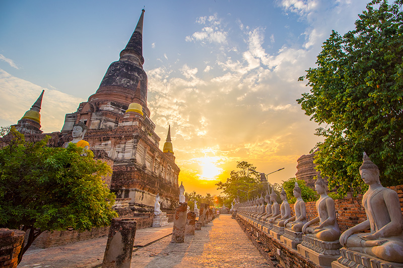

วัดใหญ่ชัยมงคล
วัดใหญ่ชัยมงคล เดิมชื่อ "วัดป่าแก้ว" หรือ "วัดเจ้าไท" จุดเด่นของวัดได้แก่เจดีย์องค์ใหญ่ที่เชื่อกันว่า ได้รับการปฏิสังขรณ์ขึ้นใหม่ในสมัยสมเด็จพระนเรศวรมหาราชที่ภายในได้มีการค้นพบชัยมงคลคาถาบรรจุอยู่
ภายในพระอุโบสถ เป็นที่ประดิษฐานพระพุทธชัยมงคล พระประธานที่เป็นสิ่งศักดิ์สิทธิ์ของวัด นอกจากนี้แล้ว ภายในวัดยังเป็นที่ประดิษฐานศาลสมเด็จพระนเรศวรมหาราช ที่ก่อสร้างแล้วเสร็จในปี พ.ศ. 2544
เป็นสถานที่ประดิษฐาน พระเจดีย์ชัยมงคล อนุสรณ์แห่งชัยชนะอันยิ่งใหญ่ของสมเด็จพระนเรศวรมหาราช และประดิษฐานพระพุทธไสยาสน์ขนาดใหญ่ ว่ากันว่าหากได้ไปสักการบูชาจะช่วยเสริมสิริมงคลให้กับชีวิตอีกด้วย
มาวัดใหญ่ชัยมงคลขอพรเรื่องอะไร?? มีความเชื่อกันว่าสักครั้งในชีวิตให้ไปกราบไหว้ขอพรเพื่อเป็นมงคลอันยิ่งใหญ่ จะมีชัยชนะเหนืออุปสรรคทั้งปวง เสริมอำนาจบารมี และเป็นมงคลแก่ชีวิต พร้อมกับแนะนำให้คนที่มีเคราะห์ภัยไปห่มผ้าพระพุทธไสยาสน์และองค์พระเจดีย์ชัยมงคล สะเดาะเคราะห์แก้ดวงตก

วัดใหญ่ชัยมงคล